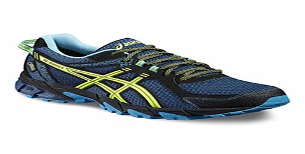

Si os habéis decidido a empezar a correr por el monte te vamos a presentar una zapatilla que se adecúa a las necesidades mínimas de trail runner principiante. Las Asics Gel Sonoma 2.
Se trata de la apuesta de la casa japonesa para aqueloos y aquellas que buscan un modelo con buena amortiguación, estabilidad, versatilidad y de grandes prestaciones para iniciarse en esta disciplina.
Dispone de GEL trasero, detalles reflectantes, suela específica de trail, plantilla extraíble, mediasuela de Speva y una construcción específica que ayuda a su durabilidad.
LLa Navidad está llena de tradiciones, y últimamente están surgiendo nuevas costumbres que nos sorprenden por su peculiaridad, como por ejemplo la tendencia de llevar Ugly Christmas jumpers durante las fiestas. Esta nueva moda se está extendiendo a países que antes no contaban con ella, e incluso en algunas zonas se celebra el “Día del jersey hortera de Navidad”.
Asics Tiger, a la vanguardia en cuanto a inspiración se refiere, presenta un pack especial inspirado precisamente en los Ugly Christmas jumpers. El pack está compuesto por Gel-Lyte III, con su característica lengüeta partida, y Gel-Lyte V, con su conocido monosock en neopreno. Los dos modelos cuentan con un corte realizado en suede azul o verde, y el interior de cada estilo está forrado con un print en rojo y blanco inspirado en los motivos típicos de los jerséis de Navidad. Ambos modelos presentan la suela en blanco para contrastar con el corte.